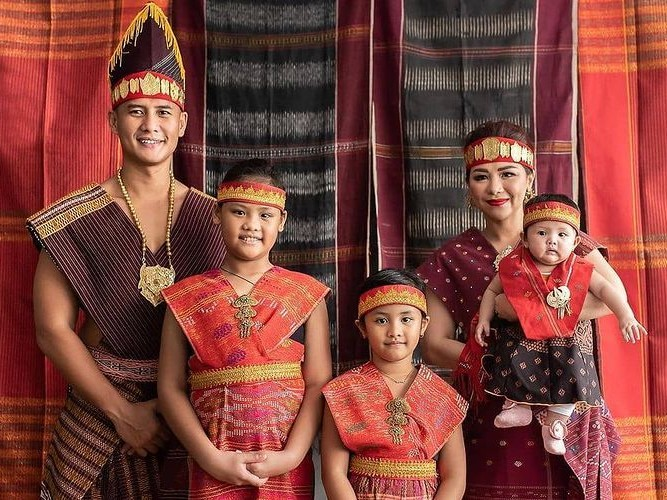

Lihat ragam busana khas dari berbagai daerah di Indonesia.

Kebaya - Jawa
Kebaya adalah pakaian tradisional Indonesia yang berasal dari daerah Jawa, yang memiliki ciri khas elegan dan anggun. Kebaya biasanya terbuat dari kain transparan, seperti brokat atau sutra, dan dikenakan bersama kain batik atau sarung sebagai bawahan. Kebaya sering dihiasi dengan bordiran atau renda yang indah

Ulos - Batak
Ulos adalah pakaian tradisional yang berasal dari suku Batak di Sumatra Utara, Indonesia. Ulos biasanya terbuat dari bahan tenun tangan, seperti kapas atau sutra, dan dihiasi dengan pola-pola khas yang memiliki makna tertentu, seperti simbol keberuntungan, kesejahteraan, dan keharmonisan.
Baju Bodo - Bugis
Bodo adalah pakaian tradisional suku Bugis yang berasal dari Sulawesi Selatan. Baju ini dikenal dengan desain yang sederhana namun elegan, biasanya terbuat dari kain sutra atau kain tipis lainnya. Ciri khas baju Bodo adalah potongan yang pendek, hanya mencapai pinggang, dengan lengan pendek atau tanpa lengan sama sekali
Beskap - Jawa Tengah
Beskap biasanya terbuat dari kain yang agak tebal, seperti sutra atau katun, dan memiliki potongan yang rapi dengan garis yang tegas. Ciri khas beskap adalah bagian atas yang berupa jas berkerah tinggi dengan kancing di bagian depan, serta dipadukan dengan kain batik sebagai bawahan yang diikat dengan ikat pinggang (sabuk).
Baju Kurung - Kalimantan Selatan
Baju Kurung umumnya terbuat dari bahan seperti sutra, katun, atau kain tenun tradisional. Bagian depan baju biasanya dilengkapi dengan kancing atau bordir yang memperindah tampilannya. Pakaian ini dipadukan dengan bawahan berupa sarung atau kain panjang, yang seringkali dihiasi dengan motif-motif khas Banjar.
Pakaian Tidung - Kalimantan Utara
Pakaian Tidung adalah pakaian tradisional yang berasal dari suku Tidung, yang mendiami wilayah Kalimantan Utara. Pakaian ini memiliki desain yang khas, dengan ciri-ciri yang menggambarkan keindahan budaya dan tradisi suku Tidung mencerminkan kesederhanaan, keharmonisan, dan kekayaan budaya masyarakat Tidung di Kalimantan Utara.
Sasirangan - Kalimantan Selatan
Sasirangan biasanya digunakan untuk membuat berbagai jenis pakaian, seperti baju, sarung, atau selendang, dan sering dipakai dalam acara adat, pernikahan, maupun upacara penting lainnya. Kain sasirangan memiliki warna-warna cerah dan motif yang menarik, yang menjadi identitas budaya masyarakat Kalimantan banjar
Pakaian Dayak - Kalimantan Tengah
Motif pada pakaian adat Dayak Kalimantan Tengah tidak hanya berfungsi sebagai dekorasi, tetapi juga mengandung makna filosofis yang mendalam. Pola-pola pada kain tersebut sering kali melambangkan hubungan dengan alam, roh leluhur, serta kekuatan dan keharmonisan dalam kehidupan
Pakaian Adat Tulang Bawang - Lampung
Tulang bawang seperti banyak pakaian adat Indonesia lainnya, tidak hanya berfungsi sebagai pakaian, tetapi juga memiliki makna simbolis yang mendalam. Motif dan aksesori yang digunakan melambangkan keharmonisan antara manusia, alam, dan leluhur. Selain itu, pakaian adat ini menunjukkan status sosial, identitas budaya, serta kedudukan dalam masyarakat
Baju Bundo Kanduang - Sumatera Barat
Bundo Kanduang adalah simbol keanggunan, kehormatan, dan keindahan budaya Minangkabau. Pakaian adat ini menggabungkan unsur keindahan seni tradisional dengan nilai-nilai budaya yang mendalam, menjadikannya pakaian yang sangat dihargai dan dikenakan dalam berbagai acara adat yang penting di Sumatera Barat
Pakaian Adat Bali
Pakaian adat Bali memiliki nilai simbolis yang mendalam, terutama terkait dengan keagamaan dan kehidupan sosial. Warna, motif, dan aksesori pada pakaian adat Bali sering kali melambangkan berbagai aspek kehidupan, seperti kesucian, kebahagiaan, keseimbangan, serta hubungan manusia dengan Tuhan, alam, dan sesama
Pakaian Adat Papua
Pakaian adat Papua adalah representasi dari kekayaan budaya, kepercayaan, dan tradisi masyarakat Papua. Dengan menggunakan bahan alami, pakaian adat ini mencerminkan hubungan yang erat antara masyarakat Papua dan alam sekitar mereka